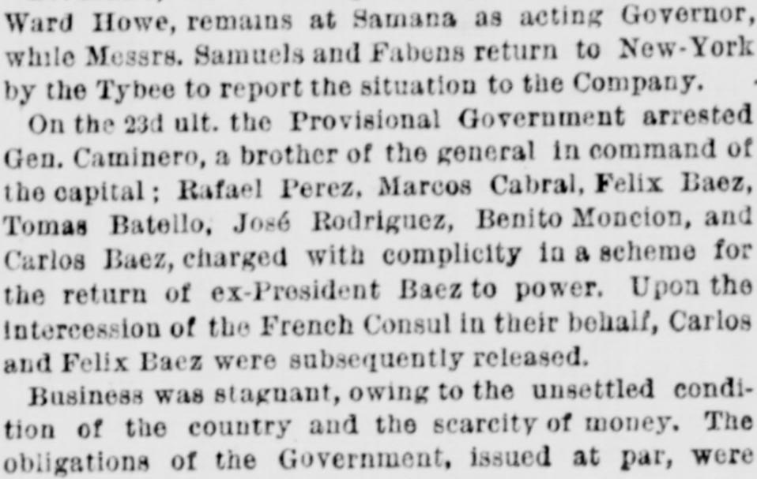
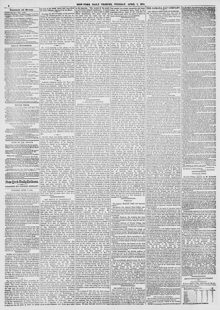

See the full pageVer la página completaThe return of ex-president Baez to power, Upon the intercession of the French ConsulEl retorno al poder del expresidente Baez, por intercesión de
The New-York Tribune reported on April 7, 1874, that the return of ex-President Baez to power led to the release of Carlos and Felix Baez upon the intercession of the French Consul, while business remained stagnant and government obligations were offered at an 85 percent discount. Additionally, the announcement that the treaty between the Santo Domingo Government and the Samana Bay Company had been abrogated discouraged promoters and sympathizers, prompting returning Commissioners Capt. Samuels and Gov. Fabens to hold informal consultations with company director Paul N. Spofford and other members in New York.El New-York Tribune informó el 7 de abril de 1874 que el regreso al poder del expresidente Báez condujo a la liberación de Carlos y Félix Báez tras la intercesión del cónsul francés, mientras que el comercio permanecía paralizado y las obligaciones gubernamentales se ofrecían con un 85 por ciento de descuento. Además, el anuncio de la abrogación del tratado entre el gobierno de Santo Domingo y la Samana Bay Company desalentó a promotores y simpatizantes, lo que motivó a los comisionados retornados, el capitán Samuels y el gobernador Fabens, a sostener consultas informales en Nueva York con el director de la compañía Paul N. Spofford y otros miembros.
FULL TEXT:TRADUCCIÓN:
Commissioners have protested against this act as arbitrary and illegal, and as being due to Haytian influence, and demand an arbitration on all matters in dispute, according to the terms of the convention.Los comisionados han protestado contra este acto como arbitrario e ilegal, y como debido a la influencia haitiana, y demandan un arbitraje sobre todos los asuntos en disputa, según los términos de la convención.
accompanied by his wife, Mrs. Julia Ward Howe, remains at Samana as acting Governor, while Capt. Samuels and Fabens return to New-York to report the situation to the Company.acompañado por su esposa, la Sra. Julia Ward Howe, permanece en Samaná como Gobernador interino, mientras el capitán Samuels y Fabens regresan a Nueva York para informar la situación a la Compañía.
The Provisional Government arrested several prominent men, including the brother of the general in command of the Dominican forces, charging them with complicity in a scheme for the return of ex-President Baez to power. Upon the intercession of the French Consul in their behalf, Carlos Baez and Perez were subsequently released.El Gobierno Provisional arrestó a varios hombres prominentes, incluyendo al hermano del general al mando de las fuerzas dominicanas, acusándolos de complicidad en un plan para el regreso del ex Presidente Báez al poder. Por la intercesión del Cónsul francés en su favor, Carlos Báez y Pérez fueron subsecuentemente puestos en libertad.
owing to the unsettled condition of affairs, and the scarcity of money. The legal tender of the Government, issued at par, were circulating at 30 per cent discount.debido a la condición inestable de los asuntos, y la escasez de dinero. La moneda de curso legal del Gobierno, emitida a la par, circulaba con un 30 por ciento de descuento.
EXCITEMENT IN NEW-YORK.EXCITACIÓN EN NUEVA YORK.
The news that the treaty negotiated between the Dominican Government and the Samana Bay Company had been abrogated fell with discouraging effect upon many of the promoters of and sympathizers with the scheme. Capt. Samuels and Gov. Fabens, the commissioners appointed to investigate and treat with the Dominican authorities, were compelled to confirm the published advices were too true, and admitting that the Company in a short time could not remedy the apparently hopeless condition of affairs. Immediately upon their landing in this city they proceeded to the office of Paul N. Spofford, who has been largely connected with the commercial interests of the island and the Company, and the agent of the Company's steamer Tybee. Some time was spent in consultation with Mr. Spofford and other directors of the Company. As the by-laws of the Company require five days' notice before a meeting, the gathering of some of the members was of an informalLa noticia de que el tratado negociado entre el Gobierno dominicano y la Compañía de la Bahía de Samaná había sido abrogado cayó con efecto desalentador sobre muchos de los promotores y simpatizantes del plan. El capitán Samuels y el gobernador Fabens, los comisionados nombrados para investigar y tratar con las autoridades dominicanas, se vieron obligados a confirmar que las noticias publicadas eran demasiado ciertas, y admitiendo que la Compañía en poco tiempo no podría remediar la aparentemente desesperada condición de los asuntos. Inmediatamente al desembarcar en esta ciudad procedieron a la oficina de Paul N. Spofford, quien ha estado ampliamente conectado con los intereses comerciales de la isla y la Compañía, y el agente del vapor Tybee de la Compañía. Se dedicó algún tiempo a consultar con el Sr. Spofford y otros directores de la Compañía. Como los estatutos de la Compañía requieren aviso con cinco días de antelación antes de una reunión, la reunión de algunos de los miembros fue de carácter
New-York Tribune. New York, April 7, 1874. Page 4.